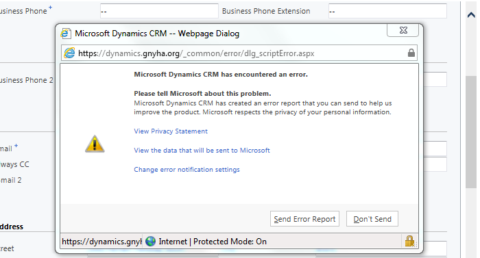
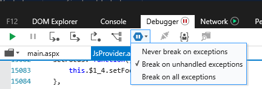
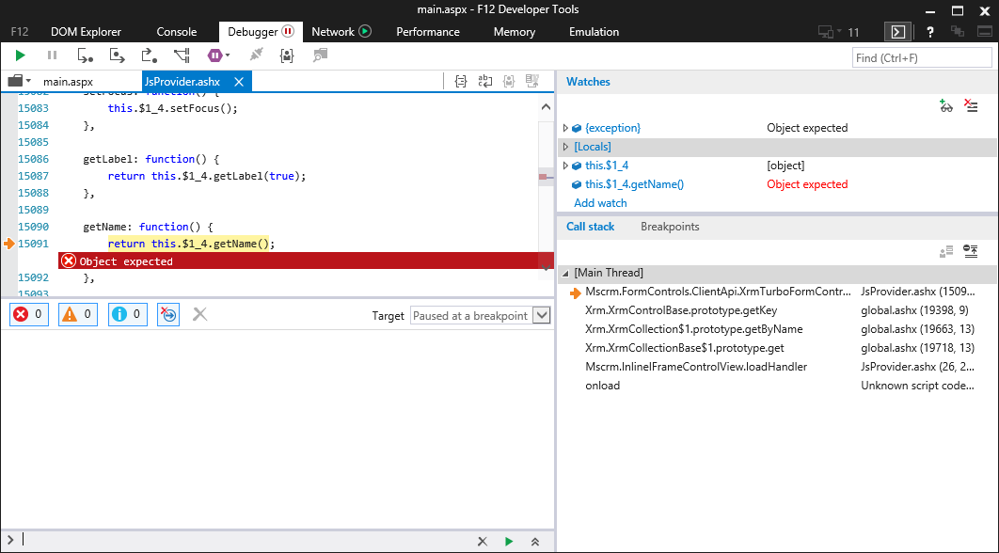
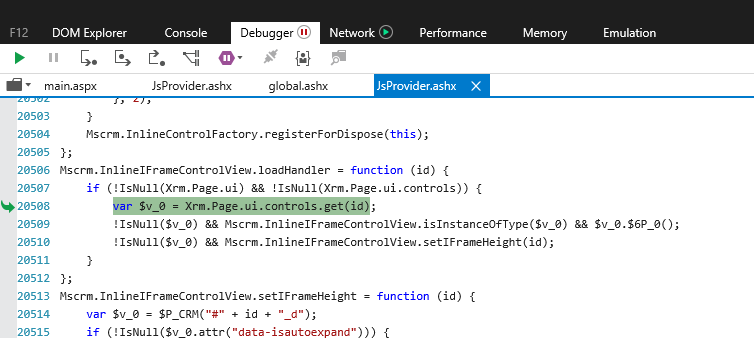
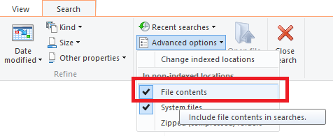
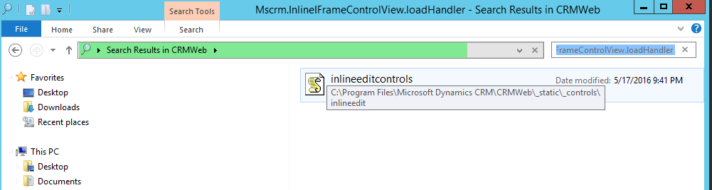

About a month before upgrading our system from Dynamics CRM 2011 to 2016, we were troubleshooting performance and specifically form load times. Nothing seemed to work and we had created an ootb organization with no customizations, so most of this time was spent trying to tweak IIS setting. Nothing seemed to get the TTFB time below about .3 seconds which actually feels pretty slow and with 200+ resources on a page, adds up. We had done all our upgrade testing and prep in the rtm version and saw that there was a service pack available.
After installing this service page - things are MUCH better - the screen transitions are much much snappier and the TTFB is down to about .056 seconds.
We ran some quick tests to check for regressions and were on our way.
About a week after launch we start getting complaints about these annoying Microsoft errors popping up sporadically.

These happen in crm when there is an unhandled JavaScript exception. Since we do a fair bit of js customization in our org, these errors are critical to letting the user know that something has gone wrong. (I think there should be an option to send these exceptions to ME INSTEAD OF MICROSOFT, but I digress).
So we find out some repro information from a user and are able to replicate the error - which only happens in internet explorer (naturally). It happens most often when leaving the contact form either by saving or closing. Crm of course catches these errors and them and waits to show them to a user until the least relevant time possible. Below is the exception you get by clicking "see what this error report contains"
<CrmScriptErrorReport>
<ReportVersion>1.0</ReportVersion>
<ScriptErrorDetails>
<Message>Object expected</Message>
<Line>15499</Line>
<URL></URL>
<PageURL>/form/page.aspx?lcid=1033&themeId=351f664e-a6d1-4733-1cf7-b3235fca2d91&tstamp=11053490&updateTimeStamp=636135147600972731&userts=131237789654599814&ver=-580792269#etc=1&extraqs=%3f_CreateFromId%3d%257bE5321C35-CB2F-4EBB-A4CC-77FAA0C43389%257d%26_CreateFromType%3d4300%26_gridType%3d1%26etc%3d1%26id%3d%257b5DC1AD2E-4F4B-460D-A748-958043CD4CB2%257d%26rskey%3d%257b00000000-0000-0000-00AA-000010001200%257d&pagemode=iframe&pagetype=entityrecord&rskey=%7b00000000-0000-0000-00AA-000010001200%7d&counter=1479332942490</PageURL>
<Function>anonymousr:Objectexpected</Function>
<FunctionRaw>TypeError: Object expected</FunctionRaw>
<CallStack>
<Function>anonymousr:Objectexpected</Function>
</CallStack>
</ScriptErrorDetails>
<ClientInformation>
<BrowserUserAgent>Mozilla/5.0 (Windows NT 6.1; WOW64; Trident/7.0; SLCC2; .NET CLR 2.0.50727; .NET CLR 3.5.30729; .NET CLR 3.0.30729; .NET4.0C; .NET4.0E; rv:11.0) like Gecko</BrowserUserAgent>
<BrowserLanguage>en-US</BrowserLanguage>
<SystemLanguage>en-US</SystemLanguage>
<UserLanguage>en-US</UserLanguage>
<ScreenResolution>1920x1080</ScreenResolution>
<ClientName>Web</ClientName>
<ClienState>Online</ClienState>
<ClientTime>2016-11-16T16:49:03</ClientTime>
</ClientInformation>
<ServerInformation>
<OrgLanguage>1033</OrgLanguage>
<OrgCulture>1033</OrgCulture>
<UserLanguage>1033</UserLanguage>
<UserCulture>1033</UserCulture>
<OrgID>{0ED23A84-6DC6-E311-99A3-9C8E99160E80}</OrgID>
<UserID>{BFF92392-470C-46C9-A71B-83988DEEB489}</UserID>
<CRMVersion>8.1.0.359</CRMVersion>
</ServerInformation>
</CrmScriptErrorReport>
So that's not very helpful. The message is super generic (object expected) and the call stack doesn't look very helpful either. Enough to google though.
Great. So this is a bug introduced in the newest version, and it happens on any form which includes a web page - web resource. There is no fix for it. The only work-arounds are
A) remove the we resource from the form. Um, not a good solution. (My foot hurts when I walk. So don't walk - all better right?). Besides, for the most part these web resources aren't ours, but added by a third party managed solution. So we'd have to remove these solution and that's not an option
B) update our users preferences to either always or never send these errors to msft. The effect of this is users no longer get notified of errors, the system just eats them up. Are you kidding me? What if we're using js to validate a field and the validation fails? We'd have to rewrite all our js code to catch everything and have our own mechanism for alerting. That's a lot of work and not really reasonable.
C) wait for a fix. This is a good option, it's a pretty ugly bug. Must be high priority. Oh wait there's very little info online about the road map, and I happen to have opened a bug report about another issue with msft, so I took the opportunity to ask the crm tech about next service pack and he said they haven't seen anything yet and so it would probably be 1st quarter 2017 some time. We can't very well leave people getting error messages all over the place for months.
D) revert to legacy form rendering. This does fix the issue, but in testing - breaks something which is actually critical to us and is not an option ( involves field validation and the save and close button ).
E) try to fix this ourselves. This is a dumb error message. It happens when loading a web resource which seems to load fine anyway. It seems to be caused by the new form rendering engine which [quote from msft about new form ending optimization ].
Ok so let's dig in. Fire up ie dev tools, and change the debugger to pause at any exception, so you can see at what point the error is thrown.

It happens before the form is loaded, and the code appears to be trying to get a reference to the web resource key.

If you drill into the code here you'll see it's trying to find the field by enumerating all the fields on the form, then checking each one for a matching key. Since the form isn't loaded, the controls are all blank and don't have a key. Hence object expected. Fine - nothing we can do make these controls load earlier, that's waaaay outside the scope of what I'm willing to do.
But this is a stupid error message which doesn't have any noticeable impact anyway. So maybe we can find a good place to catch this error ourselves, and we can handle the exception - that's perfect.
Look up the call stack and you can see it's being called by

There's a great place, this appears to just be setting the height of the iFrame. (As well as $6P_0())
Ok though so there the code fix to make, but which JavaScript file is this coming from?
\JsProvider.ashx
Lovely. Well I'm not going to be thwarted that easily - I log in to the crm server, open the directory for the crm web application, change my search options to look through the file contents and then search for the function name.
 
Success!! Open this up, and though it's compressed (whitespace removed), it's not minified (turned your beautiful code into a heaping pile of letter crap to save space).
Mscrm.InlineIFrameControlView.loadHandler = function (id) {
if (!IsNull(Xrm.Page.ui) && !IsNull(Xrm.Page.ui.controls)) {
try {
var $v_0 = Xrm.Page.ui.controls.get(id);
!IsNull($v_0) && Mscrm.InlineIFrameControlView.isInstanceOfType($v_0) && $v_0.$6P_0();
!IsNull($v_0) && Mscrm.InlineIFrameControlView.setIFrameHeight(id);
}
catch (err) {
console.log(err);
}
}
};
A quick code patch later, reset IIS, and there you go. No more errors (except when you need them :) )